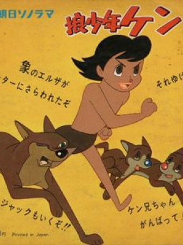
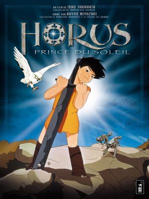

Doggie March 1963

Ken l’enfant loup 1963
Le voyages de Gulliver dans l’espace 1964

Horus prince du soleil 1968


Porfil

Paramétre

Partage de position

Aide

Doggie March 1963
Ken l’enfant loup 1963
Le voyages de Gulliver dans l’espace 1964
Horus prince du soleil 1968